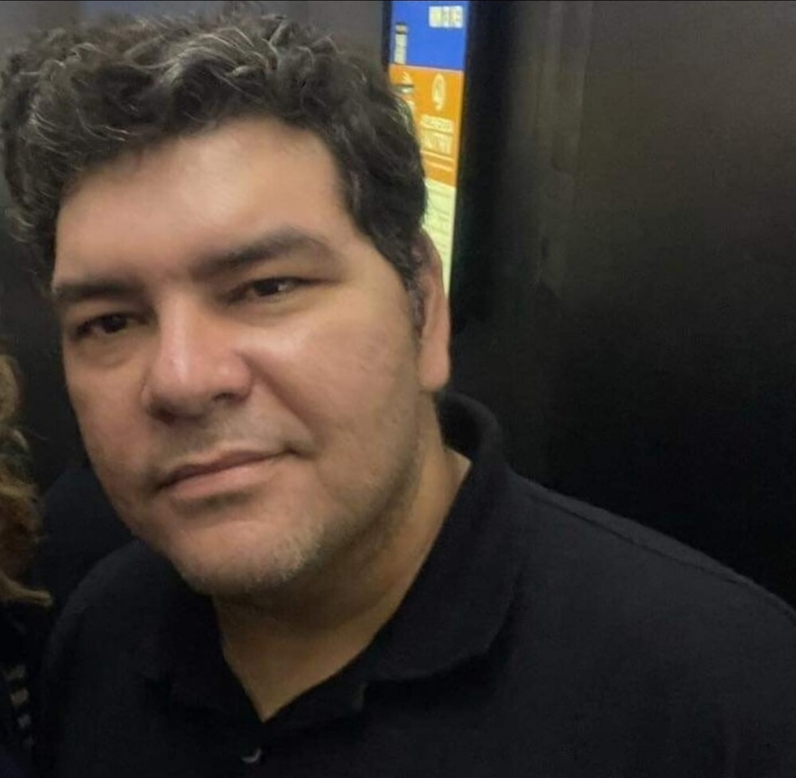

Dr. Osvaldo L. Santos-Pereira
Físico, pesquisador, cientista de dados e especialista em inteligência artificial.
Physicist, researcher, data scientist and artificial intelligence specialist.
Sou físico, pesquisador, cientista de dados, especialista em inteligência artificial, autor e escritor. Sou doutor em Física pela Universidade Federal do Rio de Janeiro, mestre e bacharel em Física pela Universidade Estadual de Campinas, possuo MBA em Big Data e Analytics pela Universidade de São Paulo e especialização em Computação Quântica pelo SENAI CIMATEC.
I am a physicist, researcher, data scientist, artificial intelligence specialist, author, and writer. I hold a PhD in Physics from the Federal University of Rio de Janeiro, an MSc and a BSc in Physics from the University of Campinas, an MBA in Big Data and Analytics from the University of São Paulo, and a postgraduate specialization in Quantum Computing from SENAI CIMATEC.
Sou pesquisador vinculado ao Programa de Pós-Graduação em Física Aplicada Multidisciplinar (PPGMFA) do Instituto de Física da Universidade Federal do Rio de Janeiro. Meus interesses de pesquisa incluem geometrias de warp drive, relatividade geral, gravitação clássica e quântica, cosmologia, computação quântica, econofísica, física computacional, inteligência artificial, e matemática pura e aplicada, particularmente teoria analítica dos números, álgebra e geometria.
I am a researcher affiliated with the Graduate Program in Multidisciplinary Applied Physics (PPGMFA) at the Institute of Physics of the Federal University of Rio de Janeiro. My research interests include warp-drive spacetimes, general relativity, classical and quantum gravity, cosmology, quantum computing, econophysics, computational physics, artificial intelligence, and pure and applied mathematics, particularly analytic number theory, algebra, and geometry.
Possuo aproximadamente 15 anos de experiência no setor privado, atuando em ciência de dados, analytics, inteligência artificial, liderança técnica, gerenciamento de projetos e consultoria nos setores financeiro, hospitalar, tecnológico, educacional e industrial. Sou também autor de artigos científicos, livros, materiais didáticos, ensaios técnicos e projetos computacionais.
I have approximately 15 years of experience in the private sector, working in data science, analytics, artificial intelligence, technical leadership, project management, and consulting across the financial, healthcare, technology, education, and industrial sectors. I am also the author of scientific articles, books, educational materials, technical essays, and computational projects.